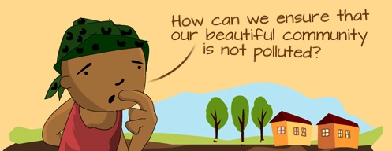

What is land pollution?
Land pollution is the deterioration (destruction) of the earth’s land surfaces, often directly or indirectly as a result of man’s activities and their misuse of land resources.
It occurs when waste is not disposed off properly, or can occur when humans throw chemicals unto the soil in the form of pesticides, insecticides and fertilizers during agricultural practices. Exploitation of minerals (mining activities) has also contributed to the destruction of the earth’s surface.

Since the Industrial Revolution, natural habitats have been destroyed, and environments have been polluted, causing diseases in both humans and many other species of animals.
Human actions have also caused many large areas of land to lose or reduce their capacity to support life forms and ecosystems. This is know as land degradation. Note that land degradation can result from many factors, and land pollution is only one of them.
Land and Environmental Pollution, the sources of the pollution, its consequences and a few things we can do to prevent further pollution and protect our environment.